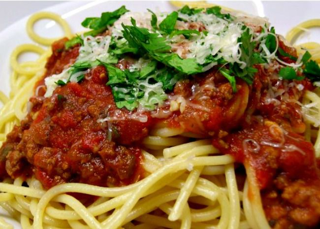

Worlds Best Spaghetti

How to Make Spaghetti
There's nothing like classic spaghetti and meat sauce to bring people together around the dinner table.
This homemade spaghetti sauce with ground beef recipe will satisfy all your comfort food cravings.
Spaghetti Ingredients
- 1 pound sweet Italian sausage
- 1 medium onion, chopped
- 4 cloves garlic, minced
- 1 small green bell pepper, diced
- 1 (28 ounce) can diced tomatoes
- 1 (16 ounce) can tomato sauce
- 1 (6 ounce) can tomato paste
- 2 teaspoons dried oregano
- 2 teaspoons dried basil
- 1 teaspoon salt
- 1/2 teasopon ground black pepper
Directions
- Gather all your ingredients.
- Combine ground beef, onion, garlic, and green pepper in a large saucepan over medium-high heat.
Cook and stir until meat is browned and crumbly and vegetables are tender, 5 to 7 minutes.
Drain grease.
- Stir diced tomatoes, tomato sauce, and tomato paste into the pan.
Season with oregano, basil, salt, and pepper.
Simmer spaghetti sauce for 1 hour, stirring occasionally.
- Serve hot over Spaghetti and enjoy!